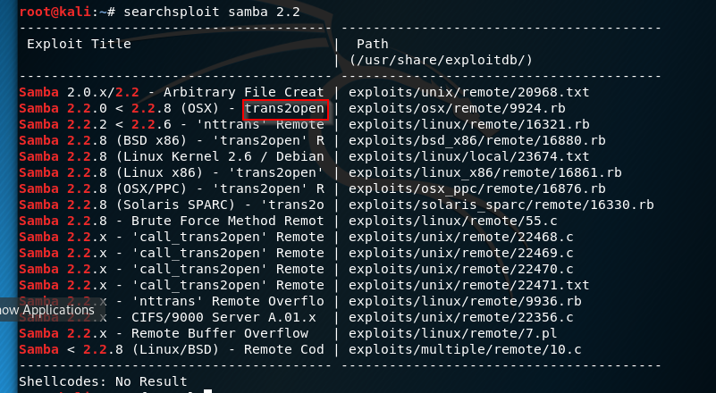

This is everything we've been doing the scanning the enumeration even the Linux and the Python.
This is all building up to this and now we're ready to exploit.
We're going to get out first shell we're going to pop our first shell.
We're going to attack SMB here. We're going to do with trans2open vulnerability.

with metasploit we will search this exploit so first 'msfconsole' then 'search trans2open' commands.

which one will we use? So we are a good researchers and information gatherers. We've seen that it was running Linux in port 80 so we'll use 1

all we have to do is set a rhost which is victim or remote host.

with options we verified that rhosts is set.
with show targets : Now there are no targets here but as you're going to see later on in the course there are often targets that we have to pick from. Not always is the first choice that's auto selected right for us. But in this instance there's only one choice. So it's the right choice.
Now there are two choices, both are going to do same thing which are run and exploit.

it is trying a brute force attack, it's trying different return addresses here. And finally lands the one that work and it says hey i'm going to send this stage. This is always a good sign by the way(sending the stage)
Then it says hey i've got this meterpreter session open because our payload has worked. And then this meterpreter session closed reason died. That's not good. So it's keep going through over and over and over and it is just dying. Let's go to options again.

!!You don't see Payload options the first time you do it but you see it the second time because metasploit says hey if your payload is not working maybe the payload is the issue and i'm going to give you payload options this time around.
!!We're running a staged payload (look to the forward slash).
LHOSTS=(listening hosts or us in short )
It's fine for these lessons when you get into actually running this in the wild. All fours is probably going to get you picked up pretty quick because this is a default meterpreter port. So some connection sees or some antivirus or detection software sees 4 4 4 4 open up.
This is going to trigger an alarm here.
for now with "set payload linux/x86" command we will set another payload. Now we will able to see payload list by pressing two times tab.

so we have bunch of options. we are searching non-staged payloads
and we'll use shell_reverse_tcp payload.

with options we are verifying that we've set payload.

we've got a shell now and this is command shell session 9 opened.


Hands down it's our machine!